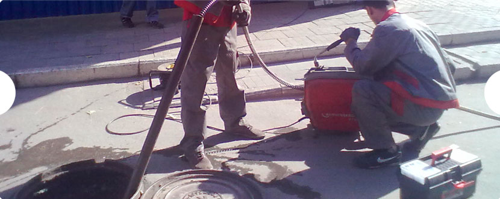

- 
Прочистка ливневой канализации
Промывка осуществляется гидродинамическим методом, суть которого заключается в подаче воды под высоким давлением. Этот метод используется в большинстве случаев, потому, что пробку, которая образуется из песка и перекрывает трубу, удобнее и легче пробить с помощью воды.
Рекомендации:
Профилактические работы по очистке ливневой канализации проводятся:
- Осенью и весной- это период, когда выпадает максимальное количество осадков.
- При запуске новых канализационных сетей или после проведения каких-либо строительных работ.
Песок после прочистки не оседает и функции канализационной системы восстанавливаются.